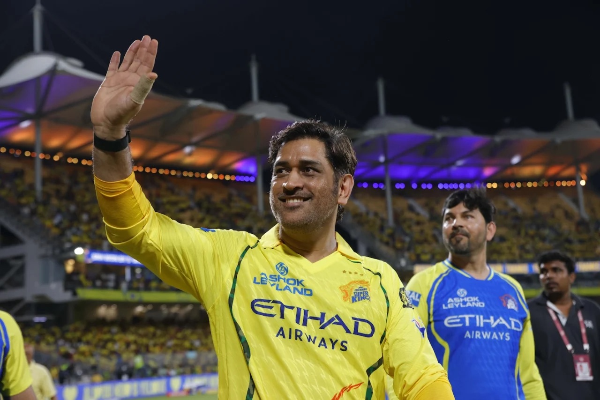
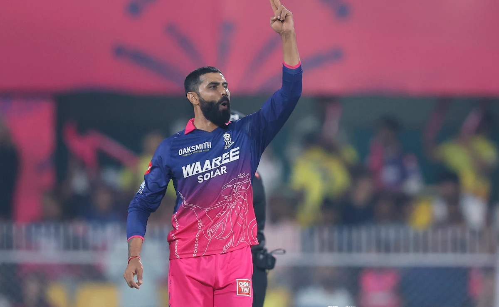
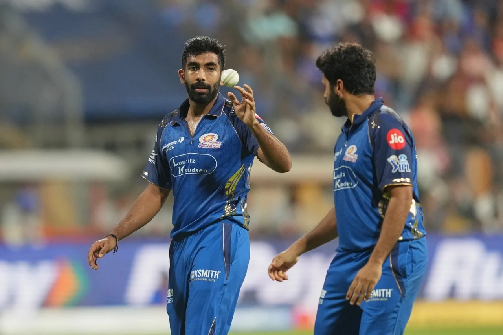
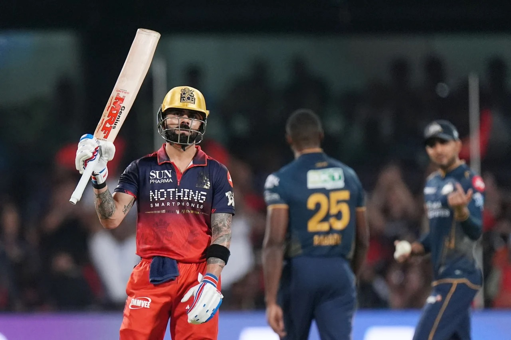
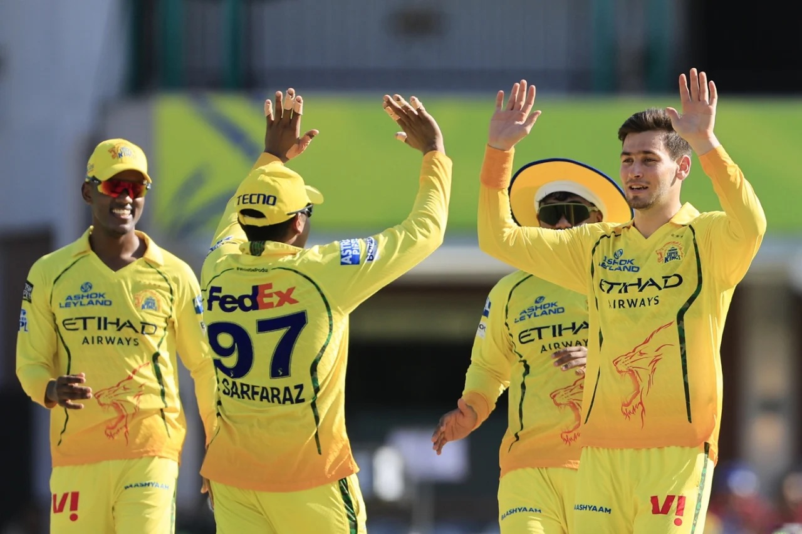
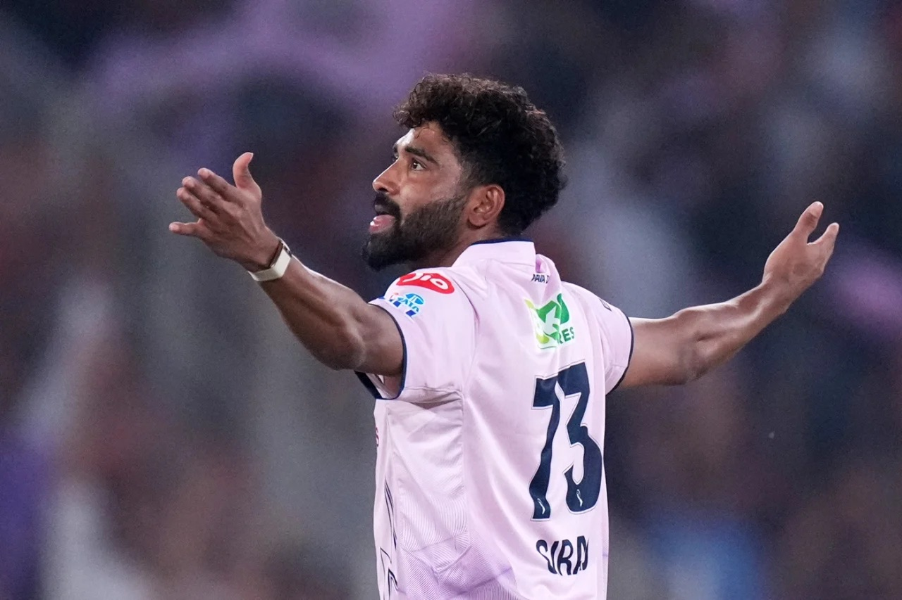

In Dhoni's Shadow: #Yellove Never Fades
Few captains have shaped the emotional landscape of cricket quite like MS Dhoni. Even as the league evolves around power-hitting and spectacle, his influence still defines composure under pressure.

'Pink Looks Good On Me'
Ravindra Jadeja marks his comeback in Rajasthan Royals colors after 17 years with a double-wicket blow against Chennai Super Kings and has never been happier to be back.

Mumbai Machine Strikes Again
There is a distinct pause that settles over a stadium before Jasprit Bumrah begins his run-up. Precision, control, and inevitability have made him one of the defining bowlers of the IPL era.

The Weight of Red
For RCB, every season arrives carrying equal parts expectation and devotion. In Bengaluru, belief survives heartbreak year after year— and that loyalty has become the franchise's true identity.

A Yellow Win
High-fives, smiles, and relentless energy. CSK's fielding unit proved once again why Chennai is never out of a game until the last ball is bowled.

Gujarat's New Weapon Has Arrived
A fresh colour, yet the same relentless fire. Siraj has brought his trademark intensity to the Gujarat Titans in 2026 sporting the lavender jersey.